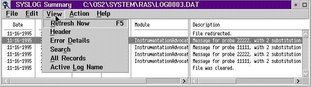

The View choices from the SYSLOG Summary window are Refresh Now, Header, Error Details, Search, All Records, and Active File Name. The description of the View choices follow. View Menu-Bar Choices on SYSLOG Summary Window 